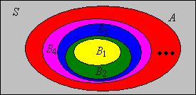

Kutu besar memiliki kutu-kutu kecil di punggung yang menggigitnya,
Dan kutu kecil memiliki kutu yang lebih kecil, demikianlah seterusnya tanpa akhir.
Dan kutu-kutu besar itu sendiri, pada gilirannya, memiliki kutu lebih besar yang menumpang;
Sementara kutu-kutu itu memiliki yang lebih besar lagi, semakin besar, dan seterusnya.
—Agustus De Morgan, A Budget of Paradoxes
Di bagian ini kita membahas beberapa topik yang berkaitan dengan kekonvergenan kejadian dan peubah acak, suatu pokok yang sangat mendasar dalam teori probabilitas. Secara khusus, hasil-hasil yang kita peroleh akan penting bagi sifat-sifat fungsi distribusi serta hukum bilangan besar lemah dan kuat. Seperti biasa, titik awal kita adalah sebuah eksperimen acak yang dimodelkan oleh ruang probabilitas \( (S, \ms S, \P) \). Sebagai tinjauan, \( S \) adalah himpunan hasil, \( \ms S \) adalah aljabar-\( \sigma \) kejadian, dan \( \P \) adalah ukuran probabilitas pada ruang sampel \( (S, \ms S) \).
Pembahasan pertama kita berkenaan dengan barisan kejadian dan berbagai jenis limit barisan tersebut. Limit-limit itu juga merupakan kejadian. Kita mulai dengan dua definisi sederhana.
Misalkan \( (A_1, A_2, \ldots) \) adalah suatu barisan kejadian.
Perhatikan bahwa ini adalah definisi baku untuk naik dan turun relatif terhadap urutan total biasa \( \le \) pada himpunan indeks \( \N_+ \) dan urutan parsial himpunan bagian \( \subseteq \) pada koleksi kejadian. Istilah ini juga dijelaskan oleh peubah indikator yang bersesuaian.
Misalkan \( (A_1, A_2, \ldots) \) adalah suatu barisan kejadian, dan misalkan \(I_n = \bs 1_{A_n}\) menyatakan peubah indikator kejadian \(A_n\) untuk \(n \in \N_+\).
Kedua bagian mengikuti fakta bahwa jika \( A \) dan \( B \) adalah kejadian, maka \( A \subseteq B \) jika dan hanya jika \( \bs 1_A \le \bs 1_B \). Untuk melihatnya, perhatikan bahwa \( A \subseteq B \) jika dan hanya jika \( s \in A \) mengakibatkan \( s \in B \) untuk \( s \in S \), jika dan hanya jika \( \bs 1_A(s) = 1 \) mengakibatkan \( \bs 1_B(s) = 1 \) untuk \( s \in S \). Karena fungsi indikator hanya bernilai 0 dan 1, pernyataan terakhir ekuivalen dengan \( \bs 1_A \le \bs 1_B \).
Jika suatu barisan kejadian naik atau turun, kita dapat mendefinisikan limit barisan itu dengan cara yang ternyata cukup alami.
Misalkan \( (A_1, A_2, \ldots) \) adalah suatu barisan kejadian.
Sekali lagi, istilah tersebut dijelaskan oleh peubah indikator yang bersesuaian.
Misalkan lagi bahwa \( (A_1, A_2, \ldots) \) adalah suatu barisan kejadian, dan misalkan \(I_n = \bs 1_{A_n}\) menyatakan peubah indikator \(A_n\) untuk \(n \in \N_+\).
Gabungan sebarang kejadian selalu dapat ditulis sebagai gabungan kejadian-kejadian naik, dan irisan sebarang kejadian selalu dapat ditulis sebagai irisan kejadian-kejadian turun:
Misalkan \((A_1, A_2, \ldots)\) adalah suatu barisan kejadian. Maka
Ada cara yang lebih menarik dan berguna untuk membentuk barisan naik dan turun dari sebarang barisan kejadian, yakni dengan menggunakan segmen ekor barisan alih-alih segmen awal.
Misalkan \( (A_1, A_2, \ldots) \) adalah suatu barisan kejadian. Maka
Karena barisan-barisan baru yang didefinisikan dalam masing-masing turun dan naik, kita dapat mengambil limitnya. Limit-limit ini masing-masing adalah limit superior dan limit inferior dari barisan asal.
Misalkan \( (A_1, A_2, \ldots) \) adalah suatu barisan kejadian. Definisikan
Sekali lagi, istilah dan notasi tersebut dijelaskan oleh peubah indikator yang bersesuaian. Anda mungkin perlu meninjau kembali limit inferior dan limit superior untuk barisan bilangan real pada bagian tentang urutan parsial.
Misalkan \( (A_1, A_2, \ldots) \) adalah suatu barisan kejadian, dan misalkan \(I_n = \bs 1_{A_n}\) menyatakan peubah indikator \(A_n\) untuk \(n \in \N_+\). Maka
Misalkan \( (A_1, A_2, \ldots) \) adalah suatu barisan kejadian. Maka \(\liminf_{n \to \infty} A_n \subseteq \limsup_{n \to \infty} A_n\).
Jika \( A_n \) terjadi untuk semua kecuali berhingga banyak \( n \in \N_+ \), maka tentu \( A_n \) terjadi untuk tak hingga banyak \( n \in \N_+ \).
Misalkan \( (A_1, A_2, \ldots) \) adalah suatu barisan kejadian. Maka
Hasil-hasil ini mengikuti hukum De Morgan.
Secara umum, suatu fungsi disebut kontinu jika mempertahankan limit. Oleh karena itu, hasil-hasil berikut merupakan teorema kekontinuan probabilitas. Bagian (a) adalah teorema kekontinuan untuk kejadian naik dan bagian (b) adalah teorema kekontinuan untuk kejadian turun.
Misalkan \((A_1, A_2, \ldots)\) adalah suatu barisan kejadian.

Teorema kekontinuan dapat diterapkan pada barisan naik dan turun yang kita konstruksi dalam dan
Misalkan \((A_1, A_2, \ldots)\) adalah suatu barisan kejadian.
Misalkan \( (A_1, A_2, \ldots) \) adalah suatu barisan kejadian. Maka
Teorema berikutnya menunjukkan bahwa aksioma aditivitas terhitung untuk suatu ukuran probabilitas ekuivalen dengan aditivitas hingga dan sifat kekontinuan untuk kejadian naik.
Untuk sementara, misalkan \( \P \) hanya aditif hingga, tetapi memenuhi sifat kekontinuan untuk kejadian naik (a). Maka \( \P \) aditif terhitung.
Misalkan \( (A_1, A_2, \ldots) \) adalah suatu barisan kejadian yang saling lepas berpasangan. Karena kita mengasumsikan bahwa \( \P \) aditif hingga, kita memperoleh \[ \P\left(\bigcup_{i=1}^n A_i\right) = \sum_{i=1}^n \P(A_i) \] Jika kita mengambil \( n \to \infty \), ruas kiri konvergen ke \( \P\left(\bigcup_{i = 1}^\infty A_i\right) \) berdasarkan asumsi kekontinuan dan , sedangkan ruas kanan konvergen ke \( \sum_{i=1}^\infty \P(A_i) \) berdasarkan definisi deret tak hingga.
Ada beberapa matematikawan yang menolak aksioma aditivitas terhitung untuk ukuran probabilitas dan lebih memilih aksioma aditivitas hingga yang lebih lemah. Apa pun argumen filosofisnya, segalanya tentu jauh lebih sulit tanpa teorema kekontinuan.
Lemma Borel-Cantelli, yang dinamai menurut Emil Borel dan Francessco Cantelli, merupakan perangkat yang sangat penting dalam teori probabilitas. Lemma pertama memberikan syarat yang cukup untuk menyimpulkan bahwa tak hingga banyak kejadian terjadi dengan probabilitas 0.
Lemma Borel-Cantelli Pertama. Misalkan \( (A_1, A_2, \ldots) \) adalah suatu barisan kejadian. Jika \(\sum_{n=1}^\infty \P(A_n) \lt \infty\), maka \(\P\left(\limsup_{n \to \infty} A_n\right) = 0\).
Dari , kita memperoleh \( \P\left(\limsup_{n \to \infty} A_n\right) = \lim_{n \to \infty} \P\left(\bigcup_{i = n}^\infty A_i \right) \). Namun, dari ketaksamaan Boole, \( \P\left(\bigcup_{i = n}^\infty A_i \right) \le \sum_{i = n}^\infty \P(A_i) \). Karena \( \sum_{i = 1}^\infty \P(A_i) \lt \infty \), kita memperoleh \( \sum_{i = n}^\infty \P(A_i) \to 0 \) saat \( n \to \infty \).
Lemma kedua memberikan syarat yang cukup untuk menyimpulkan bahwa tak hingga banyak kejadian saling bebas terjadi dengan probabilitas 1.
Lemma Borel-Cantelli Kedua. Misalkan \((A_1, A_2, \ldots)\) adalah suatu barisan kejadian saling bebas. Jika \(\sum_{n=1}^\infty \P(A_n) = \infty\), maka \(\P\left( \limsup_{n \to \infty} A_n \right) = 1\).
Perhatikan terlebih dahulu bahwa \(1 - x \le e^{-x}\) untuk setiap \(x \in \R\), sehingga \( 1 - \P(A_i) \le \exp\left[-\P(A_i)\right] \) untuk setiap \( i \in \N_+ \). Dari dan , \[ \P\left[\left(\limsup_{n \to \infty} A_n\right)^c\right] = \P\left(\liminf_{n \to \infty} A_n^c\right) = \lim_{n \to \infty} \P \left(\bigcap_{i = n}^\infty A_i^c\right) \] Namun, berdasarkan kebebasan dan ketaksamaan di atas, \[ \P\left(\bigcap_{i = n}^\infty A_i^c\right) = \prod_{i = n}^\infty \P\left(A_i^c\right) = \prod_{i = n}^\infty \left[1 - \P(A_i)\right] \le \prod_{i = n}^\infty \exp\left[-\P(A_i)\right] = \exp\left(-\sum_{i = n}^\infty \P(A_i) \right) = 0 \]
Untuk kejadian-kejadian saling bebas, kedua lemma Borel-Cantelli tentu berlaku dan menghasilkan suatu hukum nol-satu.
Jika \( (A_1, A_2, \ldots) \) adalah suatu barisan kejadian saling bebas, maka \( \limsup_{n \to \infty} A_n \) mempunyai probabilitas 0 atau 1:
Hasil ini sebenarnya merupakan kasus khusus dari hukum nol-satu yang lebih umum, yang dikenal sebagai hukum nol-satu Kolmogorov dan dinamai menurut Andrei Kolmogorov. Selain itu, kita dapat menggunakan hukum nol-satu untuk menurunkan teorema kalkulus yang menghubungkan deret tak hingga dan hasil kali tak hingga. Penurunan ini merupakan contoh metode probabilistik—penggunaan probabilitas untuk memperoleh hasil-hasil dalam bidang matematika lain yang tampaknya tidak berkaitan dengan probabilitas.
Misalkan \( p_i \in (0, 1) \) untuk setiap \( i \in \N_+ \). Maka \[ \prod_{i=1}^\infty p_i \gt 0 \text{ if and only if } \sum_{i=1}^\infty (1 - p_i) \lt \infty \]
Hasil kita berikutnya merupakan penerapan sederhana lemma Borel-Cantelli kedua pada pengulangan saling bebas dari suatu eksperimen dasar.
Misalkan \(A\) adalah suatu kejadian dalam eksperimen acak dasar dengan \(\P(A) \gt 0\). Dalam eksperimen majemuk yang terdiri atas pengulangan saling bebas dari eksperimen dasar tersebut, kejadian \(A\) terjadi tak hingga kali
mempunyai probabilitas 1.
Misalkan \( p \) menyatakan probabilitas \( A \) dalam eksperimen dasar. Dalam eksperimen majemuk, kita mempunyai suatu barisan kejadian saling bebas \( (A_1, A_2, \ldots) \) dengan \( \P(A_n) = p \) untuk setiap \( n \in \N_+ \) (kejadian-kejadian ini adalah salinan saling bebas
dari \( A \)). Namun, \( \sum_{n = 1}^\infty \P(A_n) = \infty \) karena \( p \gt 0 \), sehingga hasil tersebut mengikuti lemma Borel-Cantelli kedua .
Pembahasan kita berikutnya menyangkut dua cara suatu barisan peubah acak yang didefinisikan untuk eksperimen kita dapat konvergen
. Konsep-konsep ini sangat mendasar karena beberapa hasil terdalam dalam teori probabilitas merupakan teorema limit yang melibatkan peubah acak. Kasus khusus yang paling penting adalah ketika peubah acaknya bernilai real, tetapi bukti-buktinya pada dasarnya sama untuk peubah yang bernilai dalam suatu ruang metrik, sehingga kita akan menggunakan kerangka yang lebih umum.
Jadi, misalkan \( (S, d) \) adalah suatu ruang metrik dan \(\ms S \) adalah aljabar-\( \sigma \) Borel yang bersesuaian (yakni aljabar-\( \sigma \) yang dibangkitkan oleh topologi tersebut), sehingga ruang terukur kita adalah \( (S, \ms S) \). Berikut adalah kasus khusus yang paling penting:
Untuk \( n \in \N_+ \), ruang Euklides berdimensi \( n \) adalah \( (\R^n, d_n) \), dengan \[ d_n(\bs x, \bs y) = \sqrt{\sum_{i=1}^n (y_i - x_i)^2}, \quad \bs x = (x_1, x_2 \ldots, x_n), \, \bs y = (y_1, y_2, \ldots, y_n) \in \R^n \]
Ruang Euklides tentu saja dinamai menurut Euklides. Seperti disebutkan di atas, kasus satu dimensi dengan \( d(x, y) = |y - x| \) untuk \( x, \, y \in \R \) sangatlah penting. Kembali ke ruang metrik umum, ingat bahwa jika \( (x_1, x_2, \ldots) \) adalah suatu barisan dalam \( S \) dan \( x \in S \), maka \( x_n \to x\) saat \( n \to \infty \) berarti bahwa \( d(x_n, x) \to 0 \) saat \( n \to \infty \) (dalam pengertian kalkulus biasa). Untuk pembahasan selanjutnya, kita mengasumsikan bahwa \( (X_1, X_2, \ldots) \) adalah suatu barisan peubah acak yang bernilai dalam \( S \) dan \( X \) adalah peubah acak yang bernilai dalam \( S \), semuanya didefinisikan pada ruang probabilitas yang mendasari \( (\Omega, \ms F, \P) \).
Kita mengatakan bahwa \(X_n \to X\) saat \(n \to \infty\) dengan probabilitas 1 jika kejadian bahwa \( X_n \to X \) saat \( n \to \infty \) mempunyai probabilitas 1. Artinya, \[\P\{\omega \in \Omega: X_n(\omega) \to X(\omega) \text{ as } n \to \infty\} = 1\]
Kita perlu memastikan bahwa definisi tersebut bermakna, yakni bahwa pernyataan bahwa \( X_n \) konvergen ke \( X \) saat \( n \to \infty \) mendefinisikan kejadian yang sah. Perhatikan bahwa \(X_n\) tidak konvergen ke \(X\) saat \(n \to \infty\) jika dan hanya jika, untuk suatu \(\epsilon \gt 0\), berlaku \(d(X_n, X) \gt \epsilon\) untuk tak hingga banyak \(n \in \N_+\). Perhatikan bahwa jika syarat ini berlaku untuk suatu \( \epsilon \gt 0 \), maka syarat itu berlaku untuk semua \( \epsilon \gt 0 \) yang lebih kecil. Selain itu, terdapat bilangan rasional \( \epsilon \gt 0 \) yang sekecil apa pun. Jadi, \(X_n\) tidak konvergen ke \(X\) saat \(n \to \infty\) jika dan hanya jika, untuk suatu bilangan rasional \(\epsilon \gt 0\), berlaku \(d(X_n, X) \gt \epsilon\) untuk tak hingga banyak \(n \in \N_+\). Oleh karena itu, \[ \left\{X_n \to X \text{ as } n \to \infty\right\}^c = \bigcup_{\epsilon \in \Q_+} \limsup_{n \to \infty} \left\{d(X_n, X) \gt \epsilon\right\} \] dengan \( \Q_+ \) sebagai himpunan bilangan rasional positif. Hal penting yang perlu diingat adalah bahwa himpunan ini terhitung. Jadi, dengan menyusunnya sedikit demi sedikit, perhatikan bahwa \( \left\{d(X_n, X) \gt \epsilon\right\} \) adalah suatu kejadian untuk setiap \( \epsilon \in \Q_+ \) dan \( n \in \N_+ \) karena \( X_n \) dan \( X \) adalah peubah acak. Selanjutnya, limit superior suatu barisan kejadian adalah suatu kejadian. Terakhir, gabungan terhitung dari kejadian-kejadian adalah suatu kejadian.
Sebagai ahli probabilitas yang baik, kita biasanya tidak menyebut ruang sampel yang mendasari \((\Omega, \ms F)\) dan cukup menuliskan definisinya sebagai \( \P(X_n \to X \text{ as } n \to \infty) = 1 \). Pernyataan bahwa suatu kejadian mempunyai probabilitas 1 biasanya merupakan pernyataan afirmatif terkuat yang dapat kita buat dalam teori probabilitas. Jadi, konvergensi dengan probabilitas 1 adalah bentuk konvergensi terkuat. Ungkapan hampir pasti dan hampir di mana-mana kadang-kadang digunakan sebagai pengganti ungkapan dengan probabilitas 1.
Ingat bahwa metrik \( d \) dan \( e \) pada \( S \) disebut ekuivalen jika keduanya membangkitkan topologi yang sama pada \( S \). Ingat pula bahwa kekonvergenan suatu barisan merupakan sifat topologis. Artinya, jika \( (x_1, x_2, \ldots) \) adalah suatu barisan dalam \( S \) dan \( x \in S \), serta jika \( d, \, e \) adalah metrik-metrik ekuivalen pada \( S \), maka \( x_n \to x \) saat \( n \to \infty \) relatif terhadap \( d \) jika dan hanya jika \( x_n \to x \) saat \( n \to \infty \) relatif terhadap \( e \). Jadi, untuk peubah acak kita sebagaimana didefinisikan di atas, diperoleh bahwa \( X_n \to X \) saat \( n \to \infty \) dengan probabilitas 1 relatif terhadap \( d \) jika dan hanya jika \( X_n \to X \) saat \( n \to \infty \) dengan probabilitas 1 relatif terhadap \( e \).
Pernyataan-pernyataan berikut ekuivalen:
Dari rincian dalam definisi , \( \P(X_n \to X \text{ as } n \to \infty) = 1 \) jika dan hanya jika \[ \P\left(\bigcup_{\epsilon \in \Q_+} \left\{d(X_n, X) \gt \epsilon \text{ for infinitely many } n \in \N_+\right\} \right) = 0 \] dengan \( \Q_+ \) sekali lagi merupakan himpunan bilangan rasional positif. Namun, berdasarkan ketaksamaan Boole, gabungan terhitung dari kejadian-kejadian mempunyai probabilitas 0 jika dan hanya jika setiap kejadian dalam gabungan itu mempunyai probabilitas 0. Jadi, (a) ekuivalen dengan (b). Pernyataan (b) jelas ekuivalen dengan (c) karena terdapat bilangan rasional positif yang sekecil apa pun. Terakhir, (c) ekuivalen dengan (d) berdasarkan teorema kekontinuan .
Hasil kita berikutnya memberikan kriteria mendasar untuk konvergensi dengan probabilitas 1:
Jika \(\sum_{n=1}^\infty \P\left[d(X_n, X) \gt \epsilon\right] \lt \infty\) untuk setiap \(\epsilon \gt 0\), maka \(X_n \to X\) saat \(n \to \infty\) dengan probabilitas 1.
Berikut adalah modus konvergensi kita selanjutnya.
Kita mengatakan bahwa \(X_n \to X\) saat \(n \to \infty\) dalam probabilitas jika \[\P\left[d(X_n, X) \gt \epsilon\right] \to 0 \text{ as } n \to \infty \text{ for each } \epsilon \gt 0\]
Ungkapan dalam probabilitas sepintas terdengar mirip dengan ungkapan dengan probabilitas 1. Namun, seperti yang akan segera kita lihat, konvergensi dalam probabilitas jauh lebih lemah daripada konvergensi dengan probabilitas 1. Memang, konvergensi dengan probabilitas 1 sering disebut konvergensi kuat, sedangkan konvergensi dalam probabilitas sering disebut konvergensi lemah.
Jika \(X_n \to X\) saat \(n \to \infty\) dengan probabilitas 1, maka \(X_n \to X\) saat \(n \to \infty\) dalam probabilitas.
Misalkan \( \epsilon \gt 0 \). Maka \( \P\left[d(X_n, X) \gt \epsilon\right] \le \P\left[d(X_k, X) \gt \epsilon \text{ for some } k \ge n\right]\). Namun, jika \( X_n \to X \) saat \( n \to \infty \) dengan probabilitas 1, maka ekspresi di ruas kanan konvergen ke 0 saat \( n \to \infty \) berdasarkan bagian (d) dari . Jadi, \( X_n \to X \) saat \( n \to \infty \) dalam probabilitas.
Pernyataan sebaliknya sama sekali tidak berlaku. Sebuah contoh tandingan sederhana diberikan dalam . Namun, terdapat konvers parsial yang sangat berguna.
Jika \(X_n \to X\) saat \(n \to \infty\) dalam probabilitas, maka terdapat suatu subbarisan \((n_1, n_2, n_3 \ldots)\) dari \(\N_+\) sedemikian sehingga \(X_{n_k} \to X\) saat \(k \to \infty\) dengan probabilitas 1.
Misalkan \( X_n \to X \) saat \( n \to \infty \) dalam probabilitas. Maka, untuk setiap \(k \in \N_+\), terdapat \(n_k \in \N_+\) sedemikian sehingga \(\P\left[d\left(X_{n_k}, X \right) \gt 1 / k \right] \lt 1 / k^2\). Kita dapat membuat pilihan tersebut sedemikian sehingga \(n_k \lt n_{k+1}\) untuk setiap \(k\). Akibatnya, \(\sum_{k=1}^\infty \P\left[d\left(X_{n_k}, X\right) \gt \epsilon \right] \lt \infty\) untuk setiap \(\epsilon \gt 0\). Berdasarkan , \(X_{n_k} \to X\) saat \(n \to \infty\) dengan probabilitas 1.
Perhatikan bahwa bukti tersebut bekerja karena \(1 / k \to 0\) saat \(k \to \infty\) dan \(\sum_{k=1}^\infty 1 / k^2 \lt \infty\). Dua barisan mana pun dengan sifat-sifat ini juga akan bekerja dengan baik.
Ada dua modus konvergensi lain yang akan kita bahas nanti:
Misalkan kita mempunyai suatu barisan tak hingga koin yang diberi label \(1, 2, \ldots\) Selain itu, koin \(n\) mempunyai probabilitas muncul sisi gambar sebesar \(1 / n^a\) untuk setiap \(n \in \N_+\), dengan \(a \gt 0\) sebagai parameter. Kita melontarkan setiap koin satu kali secara berurutan. Nyatakan dalam \(a\), tentukan probabilitas kejadian-kejadian berikut:
Misalkan \(H_n\) adalah kejadian bahwa lontaran ke-\(n\) menghasilkan sisi gambar, dan \(T_n\) adalah kejadian bahwa lontaran ke-\(n\) menghasilkan sisi angka.
Latihan berikut memberikan contoh sederhana suatu barisan peubah acak yang konvergen dalam probabilitas, tetapi tidak dengan probabilitas 1. Tentu saja, kita mengasumsikan metrik baku pada \( \R \).
Misalkan lagi bahwa kita mempunyai suatu barisan koin yang diberi label \(1, 2, \ldots\), dan bahwa koin \(n\) jatuh dengan sisi gambar di atas dengan probabilitas \(\frac{1}{n}\) untuk setiap \(n \in \N_+\). Kita melontarkan koin-koin tersebut secara berurutan untuk menghasilkan suatu barisan \((X_1, X_2, \ldots)\) peubah acak indikator yang saling bebas dengan \[\P(X_n = 1) = \frac{1}{n}, \; \P(X_n = 0) = 1 - \frac{1}{n}; \quad n \in \N_+\]
Ingat bahwa suatu ruang terukur \( (S, \ms S) \) disebut diskret jika \( S \) terhitung dan \( \ms S \) merupakan koleksi semua himpunan bagian \( S \) (himpunan kuasa \( S \)). Selain itu, \( \ms S \) adalah aljabar-\( \sigma \) Borel yang bersesuaian dengan metrik diskret \( d \) pada \( S \), yang diberikan oleh \( d(x, x) = 0 \) untuk \( x \in S \) dan \( d(x, y) = 1 \) untuk \( x, \, y \in S \) yang berbeda. Bagaimanakah konvergensi dengan probabilitas 1 dan konvergensi dalam probabilitas bekerja untuk metrik diskret?
Misalkan \( (S, \ms S) \) adalah suatu ruang diskret. Misalkan pula bahwa \( (X_1, X_2, \ldots) \) adalah suatu barisan peubah acak yang bernilai dalam \( S \) dan \( X \) adalah peubah acak yang bernilai dalam \( S \), semuanya didefinisikan pada ruang probabilitas \( (\Omega, \ms F, \P) \). Relatif terhadap metrik diskret \( d \),
Tentu saja, penting untuk disadari bahwa suatu ruang diskret dapat menjadi ruang Borel bagi metrik selain metrik diskret.